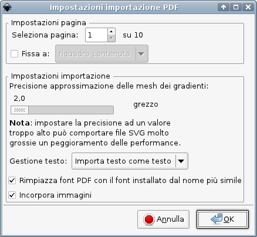

Strumenti per PDF e PostScript
Visualizzatori PDF e PostScript
Adobe Reader è il più affidabile tra i visualizzatori PDF, ma è giustamente noto come un “divora-risorse”, e può aprire soltanto file PDF. Per una veloce anteprima dei documenti PDF, alcuni utenti potrebbero preferire un programma più veloce; esistono molti visualizzatori PDF alternativi, ma soltanto due sono consigliati dal team di Scribus:
- Okular è diventato il visualizzatore di documenti predefinito nell'ambiente desktop KDE 4. Per quanto riguarda la compatibilità con le caratteristiche del formato PDF, Okular è sorprendentemente vicino ad Adobe Reader, anche se non è ancora in grado di gestire correttamente documenti PDF nello spazio colore CMYK con la gestione del colore attiva. Ciò che rende Okular ancora più interessante, oltre alle sue capacità PDF, è il lungo elenco di formati di file che è in grado di aprire e convertire: PDF, PostScript, EPS, DjVu, DVI, G3 Fax, e inoltre molti formati di immagine.
- Un altro affidabile visualizzatore e convertitore è GSview, le cui caratteristiche sono descritte in un apposito capitolo.
Visualizzatori PDF per Haiku
La Adobe non ha mai realizzato una versione di Acrobat/Adobe Reader per BeOS o Haiku. Come alternativa potete usare BePDF o DocumentViewer.
Editor PDF
Il formato PDF fu ed è progettato per essere una specie di “carta elettronica”, il che significa che non è fatto per essere modificabile. Ma, più il PDF si diffuse, più apparvero situazioni in cui aveva senso modificare questi file “non modificabili”: ad esempio correzioni di refusi all'ultimo minuto, o il riordinamento di pagine in una pubblicazione destinata alla stampa. La Adobe, che aveva inventato il PDF, prese l'iniziativa e sviluppò Acrobat, che è tuttora il più importante programma per la modifica di PDF. Ma le specifiche tecniche del formato PDF sono aperte, e anche altri cominciarono a lavorarci; oggi esistono innumerevoli strumenti, open source e non, che permettono di modificare i file PDF. Ecco un elenco di programmi open source consigliati per l'editing PDF.
- Multivalent e PDF Toolkit (pdftk) sono entrambi strumenti da riga di comando basati su Java, con numerose opzioni per la manipolazione di file PDF.
- PDF Edit è un insieme di script Qt per manipolare file PDF, ma gli script sono “nascosti” dietro un'interfaccia grafica, quindi i file vengono modificati in modalità WYSIWIG (“What you see is what you get”: quello che vedi è quello che è). PDF Edit permette di apportare molte modifiche dirette al contenuto di un file PDF, tra cui modifiche al testo o ai colori ed eliminazione di contenuto. Il programma è basato su Qt3, ma alla data in cui questa guida è stata scritta gli sviluppatori stanno lavorando per portarlo su Qt4.
- jPDF Tweak, un programma in Java, è stato giustamente definito il “coltellino svizzero” dei PDF. Per la modifica dei PDF utilizza la libreria iText, che ha un elevato grado di affidabilità.
- PDF Split and Merge (PDF SaM) è ancora più potente di jPDF Tweak e si è dimostrato un valido strumento in ambiente di prestampa. PDF SaM è uno strumento adatto ai professionisti, mentre i principianti saranno probabilmente messi in difficoltà dalle sue numerose opzioni. Come jPDF Tweak, PDF SaM è un programma Java, ma, a differenza di tutti gli altri programmi Java citati in quest'elenco, la lingua dell'interfaccia grafica può essere cambiata e vi sono molte traduzioni.
- Bookbinder è un editor PDF per principianti e per operazioni semplici. Il suo scopo principale è riordinare (e riscalare se necessario) le pagine in un file PDF per la stampa come opuscolo, e operazioni simili. Anche Bookbinder è scritto in Java.
- Per modificare un file PDF che contiene illustrazioni, potete servirvi di GIMP, Krita, Inkscape o Libre Office Draw, a seconda del contenuto, poiché tutte queste applicazioni possono importare documenti PDF e permettono di modificare i file.
|  |
Importazione PDF in Inkscape |